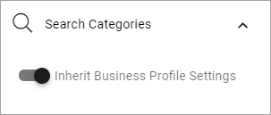
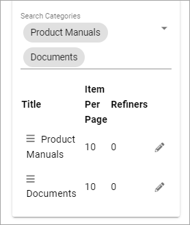
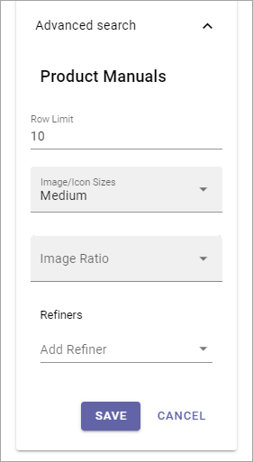

Search¶
The Search block can be used for Quick Search or Advanced Search.
Note! When used for Advanced Search, this block needs a really wide area, more or less the whole page.
Settings for Search are set up in Omnia Admin, see: Business Profile Settings - Search
Settings¶
The following settings are avilable:

General¶
The General settings are:

Title: You can add a title for the block here. If variations exists, only one title can be set. In that case, titles in other languages are set in the variations. If no variation exists for the page, you can set the title in any or all languages active in the tenant.
Auto Focus search Box: If this option is active, the search box is automatically in focus when a user opens the page, meaning the user can start seraching directly wihtout having to click in the search bos first.
Show Results in Dropdown: If search results should be available in a dropdown list, select this option.
Dropdown Max Height: When the above option is selected you set the maximum height in pixels for the dropdown. Default=0.
Dropdown Max Width: When the above option is selected you set the maximum height in pixels for the dropdown. fault=0.
Add @search parameter to the query string: For advanced search implementations. With this option active you can add parameters to the search query string, for various implementations.
Run query when no filter: If the above option is selected, select this option if a search should be executed when the page is loaded.
Search mode: Select search mode, Quick or Advanced.
Padding: You can add some padding if needed.
Search Categories¶
The following is available here:
You can inherit the search settings from the Business Profile and if that is what you want to do, you don’t need to change anything, it’s default.
But if you would like to set specific category settings for this block, deselect and the following will be available:

Quick Search¶
The folllwing settings are available for Quick Search (se image above):
Enable Promoted Search Results:
Search Categories: Use it to add search categories for Quick Search. Open the list and select.
Image/Icon Sixes: You can set image/icon size to small, medium or large.
Image Ratio: Use this to set the image for the rollup to Landscape, Square or Wide.

When you have selected a number of categories, you can edit the order, and set a row limit for each category:

Under “View more results” you can set where the “View more” link is placed; “At bottom”, “Per category” or “Custom Target”.

Advanced Search¶
Here you can set the following:

Hide Categories: By defaul, catogeories (tabs) are shown. If you don’t want tha, select this option.
Enable Promoted Search Results: If this option is selected, Promoted Search Results can be shown, if any are setup and are applicable.
Enable Search Feedback: If ot should be possible to use to send feedbavk about the search result, select this option.
Number of result columns: Set the number of columns for the search result here.
Refiner Position: Here you can set Refiner Position to Left or Right.
Refiners collapsed by default: If just the refiner groups should be shown to begin with, select this option.
Search Categories: Select Search Categories (tabs) that should be shown.
When you have selected a number of categories, you can click the pen for more settings, for that category.
These settings are available for each category:
Also note that search categories (tabs) that do not generate any result are hidden in Advanced Search.
Style¶
For Style for the search box, the following settings are available:

You can try out different style settings and see the result in the block on the fly.
Layout and Write¶
The WRITE Tab is not used here. The LAYOUT tab contains general settings, see: General Block Settings